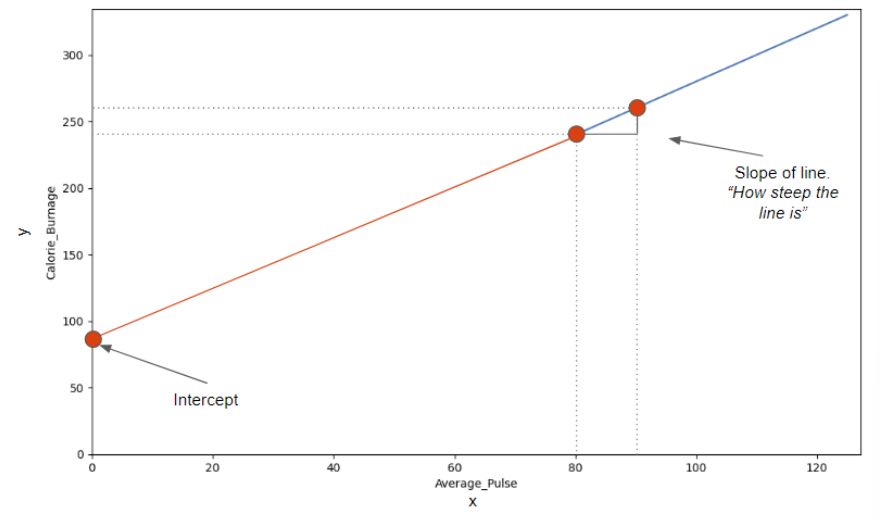
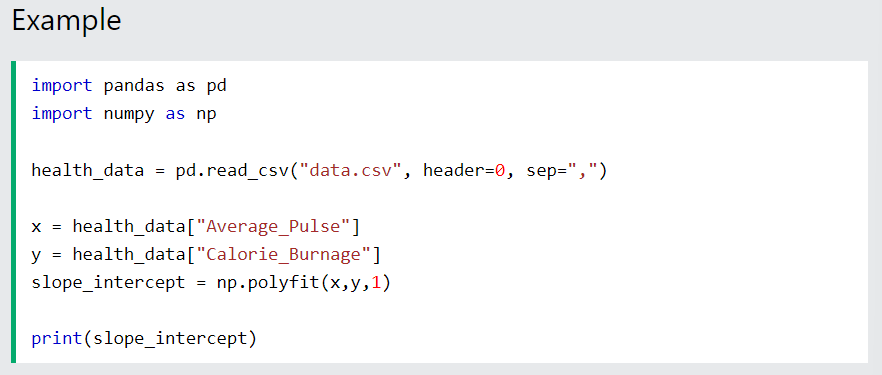
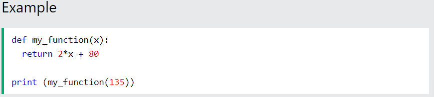
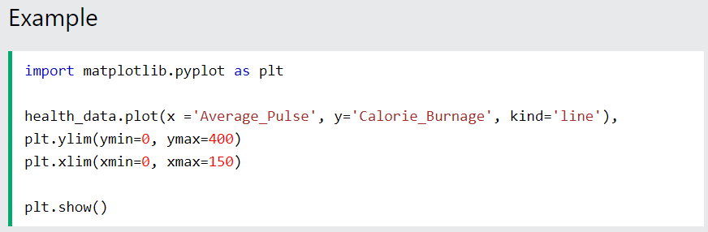

Now we will explain how we found the slope and intercept of our function:
The image below points to the Slope - which indicates how steep the line is, and the Intercept - which is the value of y, when x = 0 (the point where the diagonal line crosses the vertical axis). The red line is the continuation of the blue line from previous page.
The slope is defined as how much calorie burnage increases, if average pulse increases by one. It tells us how "steep" the diagonal line is.
We can find the slope by using the proportional difference of two points from the graph.
We see that if average pulse increases with 10, the calorie burnage increases by 20.
The Slope is 2.
f(x2) = Second observation of Calorie_Burnage = 260
f(x1) = First observation of Calorie_Burnage = 240
x2 = Second observation of Average_Pulse = 90
x1 = First observation of Average_Pulse = 80
Be consistent to define the observations in the correct order! If not, the prediction will not be correct!
Calculate the slope with the following code:
The intercept is used to fine tune the functions ability to predict Calorie_Burnage.
The intercept is where the diagonal line crosses the y-axis, if it were fully drawn.
The intercept is the value of y, when x = 0.
Here, we see that if average pulse (x) is zero, then the calorie burnage (y) is 80.
Sometimes, the intercept has a practical meaning. Sometimes not.
Does it make sense that average pulse is zero?
No, you would be dead and you certainly would not burn any calories.
However, we need to include the intercept in order to complete the mathematical function's ability to predict Calorie_Burnage correctly.
Other examples where the intercept of a mathematical function can have a practical meaning:
The np.polyfit() function returns the slope and intercept.
If we proceed with the following code, we can both get the slope and intercept from the function.
Tip: linear functions = 1.degree function. In our example, the function is linear, which is in the 1.degree. That means that all coefficients (the numbers) are in the power of one.
We have now calculated the slope (2) and the intercept (80). We can write the mathematical function as follow:
Predict Calorie_Burnage by using a mathematical expression:
Now, we want to predict calorie burnage if average pulse is 135.
Remember that the intercept is a constant. A constant is a number that does not change.
We can now substitute the input x with 135:
If average pulse is 135, the calorie burnage is 350.
Here is the exact same mathematical function, but in Python. The function returns 2*x + 80, with x as the input:
Try to replace x with 140 and 150.
Here, we plot the same graph as earlier, but formatted the axis a little bit.
Max value of the y-axis is now 400 and for x-axis is 150:
